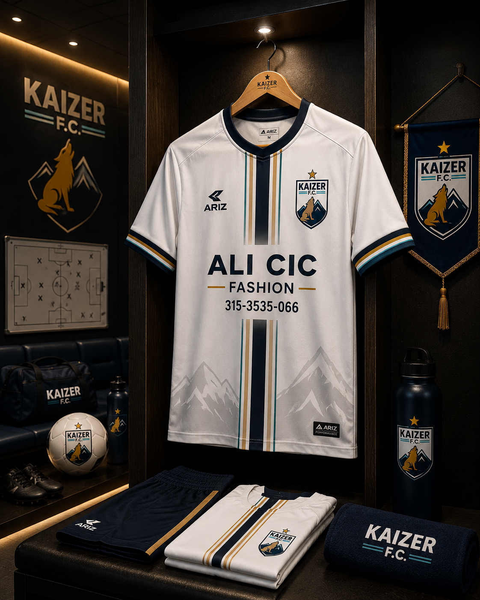

Sentido de pertenencia
Representamos nuestros colores con orgullo, respeto y lealtad.
Conoce el club ↗Una identidad que nos une. Una pasión que nos impulsa. Un proyecto futbolístico que crece con trabajo, disciplina y ambición.
 EST. KAIZER F.C.
EST. KAIZER F.C.
KAIZER F.C. es un proyecto construido alrededor del fútbol, la formación y los valores que nos permiten avanzar juntos. Cada paso cuenta. Cada integrante importa.
Representamos nuestros colores con orgullo, respeto y lealtad.
Conoce el club ↗El desarrollo deportivo debe caminar junto al compromiso y la disciplina.
Nuestras categorías ↗Trabajamos paso a paso para fortalecer las bases de nuestro proyecto futbolístico.
Nuestra visión ↗La equipación oficial 2027 expresa la identidad de KAIZER F.C. Una camiseta que representa el compromiso de quienes forman parte de esta manada.
Ver equipación ↗ EQUIPACIÓN OFICIAL · 2027
MÁS QUE UN CLUB, SOMOS UNA MANADAUn mismo escudo. Un mismo propósito. Un camino que construimos juntos.
Conoce nuestra historia ↗Sigue el crecimiento de KAIZER F.C., conoce nuestro proyecto y acompaña cada etapa del camino.
Síguenos en Instagram ↗Marcas, empresas y colaboradores que creen en nuestro proyecto y nos acompañan en el crecimiento de KAIZER F.C.
La alianza principal de nuestro proyecto deportivo.
Empresas que respaldan oficialmente al club.
Personas y negocios que contribuyen al crecimiento de la manada.
Equipamiento, materiales y servicios para el club.
Construyamos juntos nuevas oportunidades a través del fútbol.